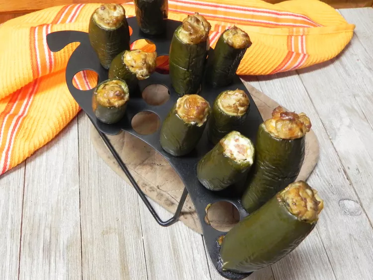

Smoked Jalapeno Poppers
Everything Bagel Seasoned Chicken Casserole

Description
These smoked jalapeno poppers go great with brisket. If you've never had
smoked cream cheese before, you are in for a treat. I prefer to use oak or
hickory in the smoker for these, but feel free to use any wood you like.
Ingredients
- 8 ounces cream cheese, softened
- 1/4 cup shredded Cheddar cheese
- 1/4 cup real bacon bits
- 1 tablespoon Montreal steak seasoning
- 12 fresh jalapeno peppers, stems removed, cored
Directions
-
Preheat a smoker to 250 degrees F (120 degrees C) according to
manufacturer's directions using wood of choice.
-
Mix cream cheese, Cheddar cheese, bacon bits, and steak seasoning in a
bowl until evenly combined.
-
Fill a piping bag with cream cheese mixture. Pipe mixture into
hollowed-out jalapenos and place on a disposable baking
-
Place baking sheet directly on the grate of the smoker. Smoke for 2
hours.